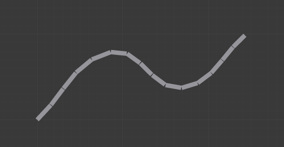

Панель «Показ» -- Display Panel¶
Орієнтир -- Reference
| Mode: | All Modes |
|---|---|
| Panel: |
Панель «Показ» -- Display.
Ця панель керує способом показу кісток у 3D Огляді -- 3D View; ви маєте на вибір чотири різні режими або типи візуалізації.
Типи візуалізації кісток¶
Blender має чотири базові типи чи режими візуалізації кісток: «Восьмигранник» -- Octahedral, «Паличка» -- Stick, «Г-Кістка» -- B-Bone, «Оболонка» -- Envelope та «Дріт» -- Wire.

Показ кістки у візуалізації «Восьмигранник» -- Octahedral. |

Показ кістки у візуалізації «Паличка» -- Stick. |

Показ кістки у візуалізації «Г-Кістка» -- B-Bone. |
{kind=link}
- Показ кістки як «Восьмигранника» -- Octahedral bone
Це стандартний режим візуалізації, що добре підходить для більшості завдань редагування. Він матеріалізує:
- Корінь кістки («великий» суглоб») та верхівку («малий» суглоб).
- «Розмір» кістки (її товщина є пропорційною її довжині).
- Вертіння кістки (як вона має квадратний перетин).

Зверніть увагу на повернуту на 40° кістку Bone.001.
- Показ кістки як «Палички» -- Stick bone
Це найпростіший та найбільш не нав'язлива візуалізація. Вона просто матеріалізує кістки як палички постійної (і малої) товщини, а тому не дає жодної інформації про корінь і верхівку, ні про розмір кістки, ні про кут вертіння.

Зверніть увагу, що кут вертіння Bone.001 не видимий (за винятком її осей XZ).
- Показ кістки як «Гнутої Кістки» -- B-Bone bone
Ця візуалізація показує вигнуті «гладко» багато-сегментні кістки; детальніше дивіться тут -- Гнуті Кістки -- Bendy Bones.

Арматура у режимі візуалізації «Г-Кістка» у Режимі Правки -- Edit Mode.
Та ж сама арматура у Режимі Об'єкта -- Object Mode.
- Показ кістки як «Оболонки» -- Envelope bone
Ця візуалізація матеріалізує деформувальний вплив кістки. Детальніше тут -- bone page.

- Показ кістки як «Дроту» -- Wire bone
Цей найпростіша візуалізація показує вигнуті «гладко» багато-сегментні кістки.

Арматура у режимі візуалізації «Дріт» у Режимі Пози -- Pose Mode.

Ця ж арматура у Режимі Правки -- Edit Mode.
{kind=link}
Опції прорису¶
- Імена -- Names
- При увімкненні, прорисовується ім'я кожної кістки.
- Кольори -- Colors
- Це діє тільки у Режимі Пози -- Pose Mode для груп кісток, про що описано детально тут -- there.
- Осі -- Axes
- При увімкненні, (локальні) осі будуть прорисовуватися (працює лише у Режимі Правки -- Edit Mode та Режимі Пози -- Pose Mode).
- Просвіт -- X-Ray
- При увімкненні, кістки арматури будуть завжди прорисовуватися поверх суцільних об'єктів (сітей, поверхонь ...) -- тобто, вони завжди будуть видимими та виділюваними (це така ж опція, як і однойменна їй на панелі Display у вкладці Object Data для інших об'єктів). Дуже корисно для суцільно відтінених режимів показу (коли не у режимі відтінення «Каркас» -- Wireframe).
- Форми -- Shapes
- При увімкненні, стандартна форма кістки замінюється у Режимі Об'єкта -- Object Mode та Режимі Пози -- Pose Mode власною формою обраного іншого об'єкта (дивіться детальніше тут -- Shaped Bones).
- Відкласти Освіження -- Delay Refresh
- При увімкненні, кістка не деформує своїх нащадків при маніпулюванні нею у Режимі Пози -- Pose Mode.